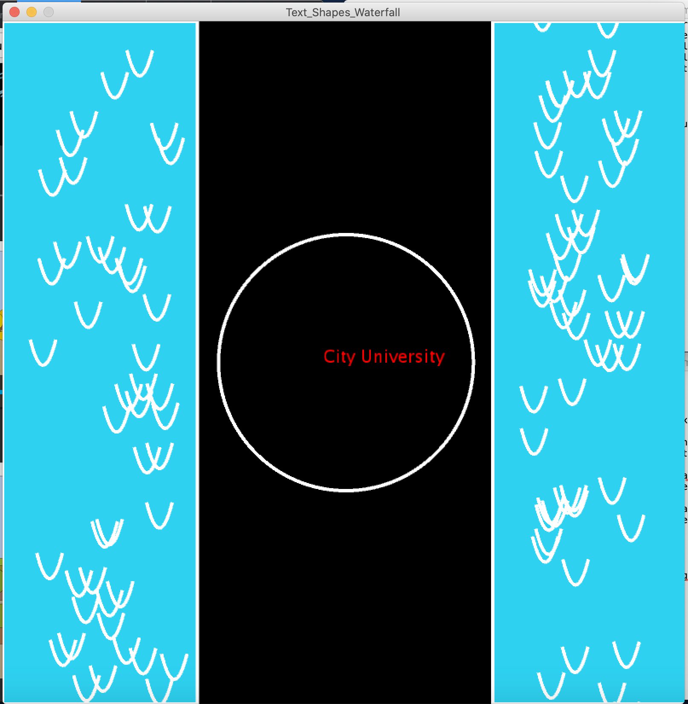
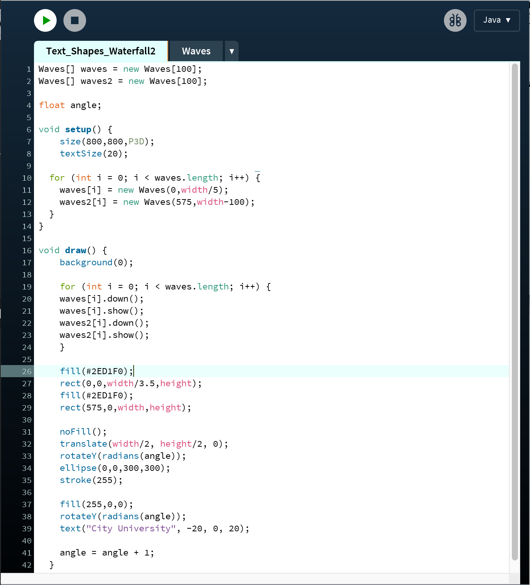

Jeremy YuenI studied Computer Science at Stanmore College where I learnt about coding which involved creating website and developing games on a Greenfoot software. By studying computer science at City university. I hope to enhance my knowledge and skills in coding. |
||
|
|
||
Text, Shape and WaterfallMy first programming project, concluding the 2-week Programming Bootcamp at City (2020). This project contains a loop, a class, floats, and an if statement. In the middle of the program, the ellipse and the text are rotated in 3D. The two waterfalls are animated on the left and the right side of the program. The curves are made on the waterfall to give some wave effect. Making multiple curves only requires a class and a loop. This allows me to create multiple curves without needing to make copies of it on multiple lines on my code. You can check out the code on Github: https://github.com/JYuen-CS/adbt092 | ||
|   | ||